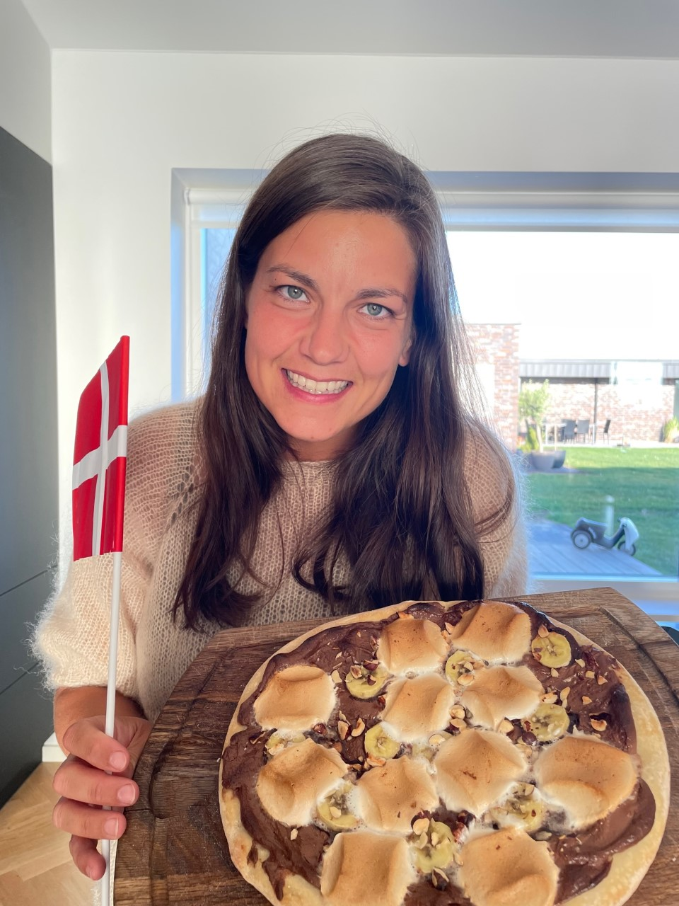
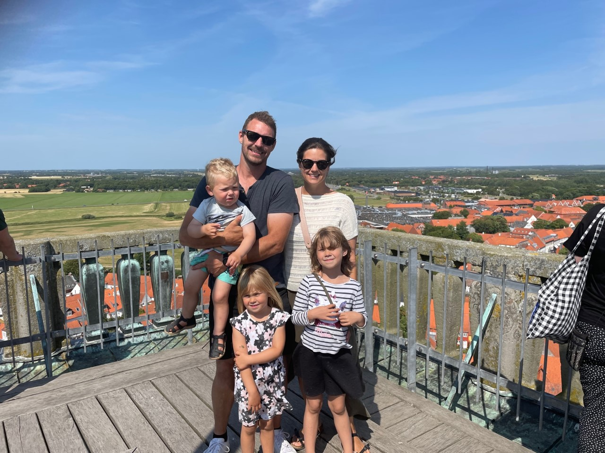

Theas side

Dette er en side om mig
Jeg læser Cand.IT Webkommunikation
Jeg hedder Thea, er født og opvokset i Århus med min mor og far og søster og bror.
- Efter folkeskolen tog jeg på efterskole på Tommerup Efterskole
- Derefter gik jeg på Århus Katedralskole, hvor jeg blev matematisk student i 2006
- Så var jeg i militæret i Holstebro ved kamptropperne, dog bare som værnepligtig. Her mødte jeg ham der senere blev min mand
- De efterfølgende tre år rejste jeg en del. Jeg var i New Zealand, Australien, Asien, Canada og Sydamerika + små ture i Europa
- Så flyttede jeg til København, da Århus var blevet for lille efter at have været ude i verden
- Her læste jeg et år på lærerseminariet, det var ikke noget for mig
- Så kom jeg ind på fysioterapeut-uddannelsen, og det var en vildt god uddannelse
- Jeg flyttede tilbage til Århus, og tog min uddannelse færdig der
- Fik mit første job på Charlottehøj Fysioterapi, en klinik i Århus. Arbejdede her i 7 år, og mødte her Annesofie
- Fik tre skønne børn i mellemtiden, Mathilde, Nicoline og Christian. Og gift med min dejlige mand, Kenneth
- Flyttede til Vejle og byggede nyt hus i 2020
- Er nu startet på cand.it-webkommunikation

Besøg W3Schools.com
Jeg håber at disse to år bliver fyldt med en masse god læring og gode snakke med alle de gode medstuderende
Studiegruppe